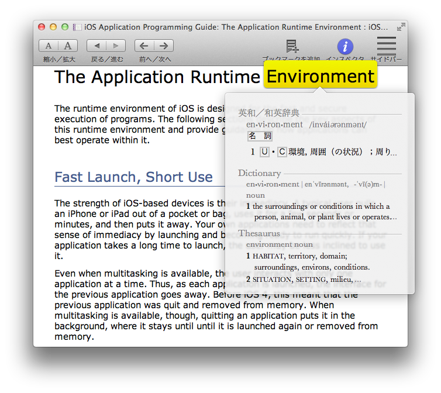

単語の上にマウスカーソルを持っていき Command + Control + D のキィボードショートカットを押すと、OS 付属の辞書での検索結果がポップアップ表示されます。

辞書ポップアップ
調べたい単語を範囲指定してから、コンテキストメニュー（右クリック or Control + クリック）の「辞書で調べる」を使うこともできます。
読み上げ
Murasaki は Mac OS X 標準のテキスト読み上げ機能に対応しています。残念ながら日本語は非対応ですが、英文ならば OS のテキスト読み上げ機能を使うことができます。
読み上げ
特定のセンテンス・単語を範囲指定してから、コンテキストメニュー（右クリック or Control + クリック）の「スピーチ」→「読み上げを開始」、もしくはメニューバーの「編集」→「スピーチ」→「読み上げを開始」で当該範囲の読み上げ、範囲指定せずにメニューバーの「編集」→「スピーチ」→「読み上げを開始」で表示しているページすべての読み上げが行えます。